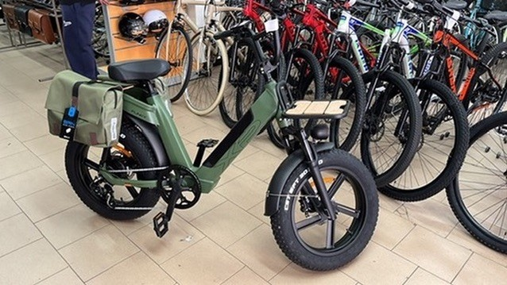

XP Bikes Funky verde militare rubata a Rimini – telaio XP2306L00800090
Segnalazione di furto. Se hai trovato questi codici su una bici, una batteria o un annuncio di vendita, la bici è stata rubata ed è stata denunciata alle Forze dell'Ordine.
- N° matricola telaio
- XP2306L00800090
- N° matricola batteria
- BDCX21LS4814523030192

Dati della bici
- Marca e modello: XP Bikes Funky (FUNKY – GREEN), fat bike elettrica con ruote 20" x 4.0
- Colore: verde militare opaco (Matte Military Green)
- Numero di telaio: XP2306L00800090
- Numero di serie della batteria: BDCX21LS4814523030192 (Li-ion 48V 14,5Ah, estraibile)
Segni distintivi
- Borse laterali posteriori verde oliva, una con etichetta blu
- Portapacchi anteriore con piano in legno chiaro
- Sella lunga nera, parafanghi neri, cerchi neri a razze, pneumatici CST
La bici potrebbe essere stata riverniciata, smontata o venduta senza batteria, caricabatterie o chiavi. Il telaio XP2306L00800090 e la batteria BDCX21LS4814523030192 potrebbero circolare separatamente.
Il furto
- Quando: tra il 2 e il 4 ottobre 2025
- Dove: Rimini (RN)
- Denuncia: presentata alle Forze dell'Ordine
Hai visto questa bici o questi seriali?
Non affrontare chi la possiede o la vende. Chiama il 112 o rivolgiti alla Stazione Carabinieri più vicina segnalando che la bici risulta rubata, poi scrivimi.
Rivenditori e officine: se vi viene portata una XP Funky con matricola telaio XP2306L00800090, o vi viene chiesta assistenza per la batteria BDCX21LS4814523030192, verificate i documenti e avvisate le Forze dell'Ordine.
Stolen e-bike
XP Bikes Funky e-bike, military green, stolen in Rimini, Italy, between 2 and 4 October 2025. Frame serial number XP2306L00800090, battery serial number BDCX21LS4814523030192. If you see it for sale, please contact the police.